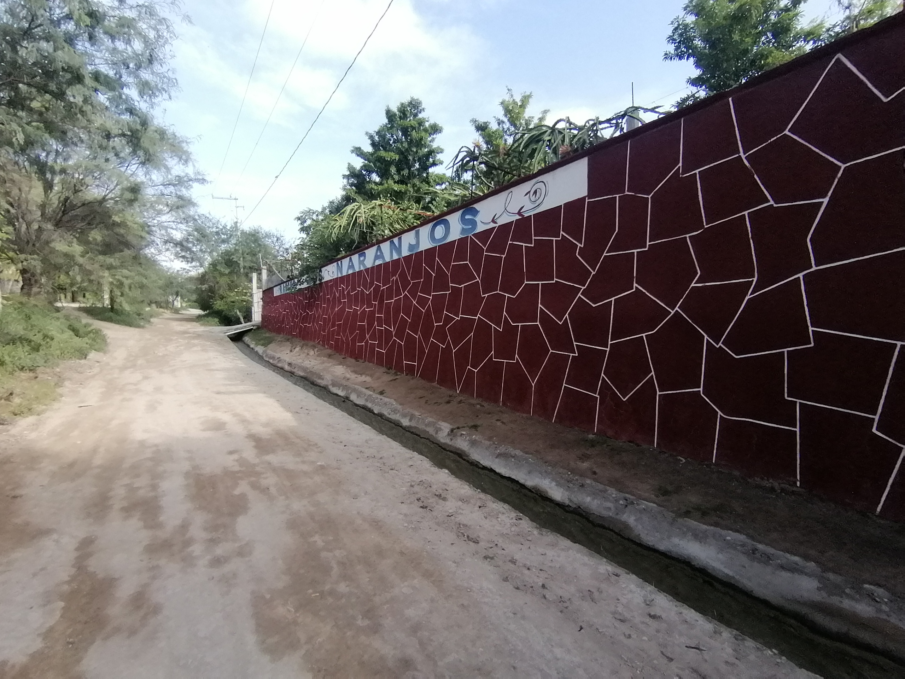

Bienvenido a Rancho Los Naranjos
¡Estamos encantados de tenerte aquí! En nuestro rancho, cultivamos frutas frescas y deliciosas con el amor y cuidado que solo la naturaleza puede ofrecer. Desde jugosas manzanas hasta dulces fresas, cada una de nuestras frutas es recolectada a mano para garantizar la mejor calidad. Explora nuestra variedad de productos, conoce nuestras prácticas de cultivo sostenible y descubre cómo llevamos lo mejor de la tierra directamente a tu mesa. ¡Gracias por visitar y apoyar la agricultura local!.
En rancho los naranjos, nos dedicamos a cultivar y cosechar frutas frescas y saludables. Nuestro compromiso con la calidad y la sostenibilidad nos impulsa a utilizar prácticas agrícolas responsables, garantizando que cada fruta que ofrecemos esté llena de sabor y nutrientes. Desde la siembra de las semillas hasta la cosecha, cada paso de nuestro proceso es cuidado con esmero. Trabajamos día a día para brindar a nuestra comunidad productos frescos y de la mejor calidad, directamente desde nuestro rancho a tu mesa. Ven y descubre la variedad de frutas que ofrecemos, y disfruta de la frescura y el sabor auténtico que solo un rancho puede ofrecer.